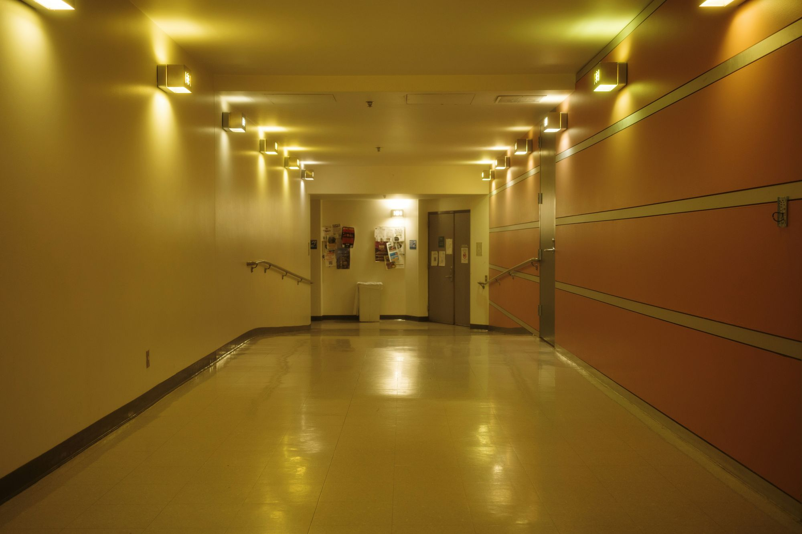
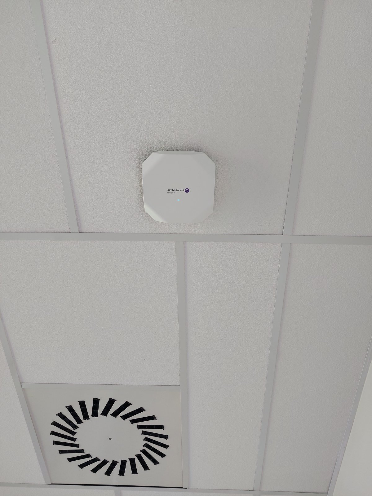

Nurse call systems
Fast, reliable staff communication, designed for an environment where response time is critical.


Integrated technology solutions for healthcare facilities, connecting communication, network infrastructure and operational systems into a stable and reliable working environment.
In healthcare facilities, reliable communication and stable infrastructure have a direct impact on how work is organised, how staff coordinate and the quality of care. TR Services develops healthcare solutions that bring key technology systems together into a clear, functional whole, with a focus on availability, simple management and long-term reliability.
Fast, reliable staff communication, designed for an environment where response time is critical.
Wired and wireless networks for the facility's medical and administrative services.
A telephone system adapted to the different functional zones of the facility.
A network foundation for connecting specialised healthcare applications and devices.
Stable infrastructure built for a round-the-clock operating environment.
Healthcare buildings have complex spatial, operational and organisational requirements. Different zones, user types and access levels call for solutions that are clearly structured and technically stable. That is why we design systems around the way each facility actually works, taking into account the needs of medical staff, administration and technical services.

In an environment where availability and response time matter most, technology systems have to work reliably and without unnecessary complexity. Our approach means choosing solutions that provide stable communication, a clearly organised network and simpler management of the services that support the facility's daily work.
Beyond current needs, the infrastructure has to be ready for future requirements, new services and technology upgrades. That is why we design healthcare solutions as a sustainable long-term foundation that can be expanded and adapted without compromising system stability.

Contact us for a consultation and a system proposal tailored to your building, the way your facility is organised and its specific operational needs.
Contact us